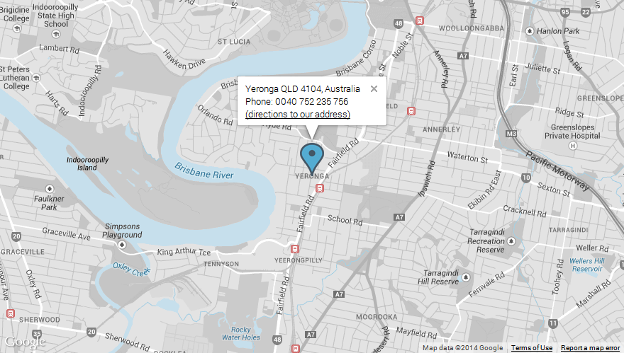

-
work Item:Responsive Styled Google Maps
-
timeline Version:4.6 (WordPress Plugin)
-
today Last modified:04 January 2019
-
assignment_ind Author:hevada
-
portrait Author profile:
-
forum Support:
Responsive Styled Google Maps - WordPress Plugin
This item is a Google map generator, easy and simple, for WordPress. The generated maps are responsive and styled and are generated using an intuitive shortcode. The plugin allows multiple markers on the same map and multiple maps in a page. A shortcode builder is included, together with 50 colorful map styles.
It's suitable for any type of WordPress website on which you want to put a map: photography, eCommerce, personal blog, company website, portfolio, venues, concerts, architecture, real estate, library, etc
Features
This plugin is developed for WordPress single-site installation. It's not recommended for WordPress multi-site installations.
These are the main features of this plugin:
- Shows address OR latitude/longitude
- 100% responsive
- Mobile-friendly
- Retina support
- Works in sidebars, posts, pages and custom post types
- Works with Visual Composer
- Multiple markers
- Multiple maps in a page/post
- Real time map preview
- HTML popups
- Search box
- Clustering option
- Show/Hide the points of interest
- Custom link in the popups
- 50 included colorful styles or a hue color
- 10 included icons
- Custom icons
- Location button
- Controls on/off
- Directions link
- Street views
- W3C valid, does not break your W3C validation
- Minified resources (JS, CSS) for faster loading
- Translation ready.
- Detailed documentation.
Structure
This is the folder structure in the plugin main folder:
{kind=link}
The main folder is: responsive-maps-plugin; and these are the sub-folders and files:
- documentation (plugin's documentation)
- includes (contains the CSS styles, the scripts and the images)
- languages (contains plugin translations files)
- class-envato-market.php (file used for automated updates)
- responsive-styled-google-maps-admin.php (plugin's admin form file)
- responsive-styled-google-maps.php (plugin's main file)
Installation
These are the steps to install the plugin:
- Download on your computer the ZIP file from codecanyon.net
- Open your WP admin dashboard and go to Plugins -> Add New -> Upload the ZIP file from step 1.
- Activate the plugin.
- Open any page, post, custom post type or text widget and create your map with [res_map address="your_address"] shortcode.
- To customize the map, add parameters like this: [res_map parameter1="value" parameter2="value"] or go to your wordpress admin panel, navigate to Settings -> Responsive Styled Maps Helper menu item. It will open the plugin's panel like in the image below, where you can customize various settings.
- Here is a video tutorial showing how to install a premium plugin, with the steps described above: https://youtu.be/JBxRuJVnMOY
- For maps created after June 22, 2016, Google requires the mandatory use of an API key, you can get a key from HERE. Please follow the steps presented at that link to get the API key and please make sure you check all these 3 products checkboxes below during the process:
After you successfuly install the plugin, navigate to Dashboard->Settings->Responsive Styled Google Maps - Helper and you will see this admin window, where you can generate the map shortcode:

Upgrade
These are the steps to upgrade the plugin from an old version to a newer version:
Manual upgrade:
- Before upgrading the plugin, do not delete the already created map shortcodes from pages or posts, they will not be affected. Also, in case you have some custom modifications made to the plugin, plese make sure that you have a backup copy of the plugin folder.
- Navigate to your Dashboard
- Deactivate the Responsive Styled Google Maps plugin.
- Delete the plugin by clicking the Delete button.
- A confirmation message displays asking you whether you’re sure you want to delete this plugin.
- Click the "Yes, Delete These Files" button.
- Download again the latest version of the plugin from codecanyon and install it from scratch.
Automatic upgrade:
- Download and install the Envato Market WordPress Plugin from: https://envato.com/market-plugin/ .
- Navigate then to your WordPress admin dashboard, click the Envato Market menu item, then click Plugins tab and click the Update link near the Responsive Styled Google Maps WordPress Plugin.
Usage
After you download and activate the plugin, just open in edit mode any post, custom post type, page or widget and write this simple shortcode to generate a map in that place:
[res_map address="street, city, country"]
Since WordPress 5.0, you will have to insert the map shortcode in a "classic" block type.
To customize the map, go to your wordpress admin panel, navigate to Settings -> Responsive Styled Maps Helper menu item. It will open the plugin's panel, where you can customize various settings.
THE BUTTONS IN ADMIN HELPER:
LOAD A SHORTCODE - just copy-paste a map shortcode previously generated, click this button, then paste your shortcode and you will be able to edit that shortcode and its settings
RELOAD THE MAP - this button just reloads the map from the right part of the screen (the map preview)
SAVE SETTINGS - this button saves all the settings at that moment into the database
RESET SETTINGS - this button just resets all the settings and the map preview to the default ones (those given as basic example)
1. Map with two markers (two addresses separated with the | pipeline symbol)
[res_map address="L'ﾃ四e-Perrot, QC, Canada | Notre-Dame-de-l'ﾃ四e-Perrot, QC, Canada" description="L'ﾃ四e-Perrot, QC, Canada | Notre-Dame-de-l'ﾃ四e-Perrot, QC, Canada" directionstext="(directions to our address)" icon="green | green" style="2" scalecontrol="no" typecontrol="no" streetcontrol="no" zoom="11" zoomcontrol="no" draggable="yes" scrollwheel="no" searchbox="no" clustering="no" logging="no"0 poi="yes" width="880px" height="500px" maptype="roadmap" popup="no" center="" refresh="no" key="your_api_key"]
2. Map with address given with latitude/longitude and zoom=8
[res_map address="45.95115,-102.509769" description="First line of text" directionstext="(directions to our address)" icon="yellow" style="14" scalecontrol="no" typecontrol="no" streetcontrol="no" zoom="8" zoomcontrol="no" draggable="yes" scrollwheel="no" searchbox="no" clustering="no" logging="no" poi="yes" width="880px" height="500px" maptype="roadmap" popup="no" center="" refresh="no" key="your_api_key"]
3. A black & white map
[res_map address="Yeronga QLD 4104, Australia" description="Yeronga QLD 4104, Australia {br} Phone: 0040 752 235 756" directionstext="(directions to our address)" icon="black" style="24" scalecontrol="no" typecontrol="no" streetcontrol="no" zoom="14" zoomcontrol="no" draggable="yes" scrollwheel="no" searchbox="no" clustering="no" logging="no" poi="yes" width="880px" height="500px" maptype="roadmap" popup="yes" center="" refresh="no" key="your_api_key"]
4. Format the description inside the popup
[res_map address="Yeronga QLD 4104, Australia" description="<img src='http://hevada.com/wp-content/plugins/responsive-maps-plugin/includes/img/company.png'> {br} Yeronga QLD 4104, Australia {br} Phone: 0040 752 235 756" directionstext="(directions to our address)" icon="http://hevada.com/mapgenerator/icons/car.png" style="22" scalecontrol="no" typecontrol="no" streetcontrol="no" zoom="14" zoomcontrol="no" draggable="yes" scrollwheel="no" searchbox="no" clustering="no" logging="no" poi="yes" width="880px" height="500px" maptype="roadmap" popup="yes" center="" refresh="no" key="your_api_key"]
5. Change the icon color
[res_map address="Yeronga QLD 4104, Australia" description="Yeronga QLD 4104, Australia {br} Phone: 0040 752 235 756" directionstext="(directions to our address)" icon="blue" style="25" scalecontrol="no" typecontrol="no" streetcontrol="no" zoom="14" zoomcontrol="no" draggable="yes" scrollwheel="no" searchbox="no" clustering="no" logging="no" poi="yes" width="100%" height="500px" maptype="roadmap" popup="yes" center="" refresh="no" key="your_api_key"]

6. Change the map style
[res_map address="Yeronga QLD 4104, Australia" description="Yeronga QLD 4104, Australia {br} Phone: 0040 752 235 756" directionstext="(directions to our address)" icon="red" style="28" scalecontrol="no" typecontrol="no" streetcontrol="no" zoom="18" zoomcontrol="no" draggable="yes" scrollwheel="no" searchbox="no" clustering="no" logging="no" poi="yes" width="100%" height="500px" maptype="roadmap" popup="yes" center="" refresh="no" key="your_api_key"]
7. Use a custom marker icon
[res_map address="Yeronga QLD 4104, Australia" description="Yeronga QLD 4104, Australia {br} Phone: 0040 752 235 756" directionstext="(directions to our address)" icon="http://hevada.com/mapgenerator/icons/car.png" style="30" scalecontrol="no" typecontrol="no" streetcontrol="no" zoom="18" zoomcontrol="no" draggable="yes" scrollwheel="no" searchbox="no" clustering="no" logging="no" poi="yes" width="880px" height="500px" maptype="roadmap" popup="yes" center="" refresh="no" key="your_api_key"]
8. Show/hide the controls
Every other control in the map can be shown / hidden by specifying its corresponding parameter. So that you can customize your map in every possible way: you have full control on what to show on the map.
[res_map address="Yeronga QLD 4104, Australia" description="<img src='http://yava.ro/wp-content/plugins/responsive-maps-plugin/includes/img/company.png'> {br} Yeronga QLD 4104, Australia {br} Phone: 0040 752 235 756" directionstext="(directions to our address)" icon="blue" iconsize="" style="27" scalecontrol="yes" typecontrol="yes" streetcontrol="yes" locateme="yes" zoom="13" zoomcontrol="yes" draggable="yes" scrollwheel="no" searchbox="yes" clustering="no" logging="no" poi="yes" fullscreen="yes" popup="yes" tabfix="no" width="100%" height="500px" maptype="roadmap" refresh="yes" center="" key="your_api_key"]
9. How to use a custom link in the marker popup
Just use the custom link in the description area like this:
[res_map address="New York" description="<a href='http://google.com' target='_blank'> the link here</a> {br} another line of text here" directionstext="" style="2" popup="yes" key="your_api_key"]
10. How to use the shortcode in a theme
Just copy-paste the map shortcode generated in the Responsive Styled Google Maps Helper from the admin dashboard and use this shortcode in a php do_shortcode statement, as explained here::
https://css-tricks.com/snippets/wordpress/shortcode-in-a-template/
11. Markers list
If you wish to have besides the map a list with all the locations and when you click on a link, the corresponding marker to be open, just use the following script:
<a href="javascript: openMarker(1, 1);">New York</a>
<a href="javascript: openMarker(1, 2);">Maryland</a>
The arguments passed to the javascript function openMarker(1, 2) mean: open the 2nd marker from the 1st map displayed. The result is the following map with links (when a link is clicked, the corresponding marker opens up):
A live example of this can be seen here: http://yava.ro/13-a-responsive-styled-map-with-a-clickable-list-of-locations/
12. How to set the pin icons for retina support
If you want to have retina support for the pin icons (so that they do not appear pixelated when zoomed in - on retina screens, for instance on iPhone4 - you will need a bigger, sharp icon and in the map shortcode you'll set the iconsize to 1/2 of the real size of that big icon. This way, on retina screens, when zoomed-in, the icon will look sharp.
For instance, let's say you want to use as pin icon an image: pin@2x.png (having width=30px and height=50px), for retina support, your map shortcode will be like this:
[res_map address="New York" icon="http://website.com/pin@2x.png" iconsize="15, 25" style="2" popup="yes"]
where 15,25 means width, height to which to scale (and are equal to half of the width=30px and height=50px).
13. How to set different colors for the pins
[res_map address="Paris | Toulouse | Montpellier" description="<img src='https://goo.gl/6sCyEM'> {br} PARIS | <img src='https://goo.gl/nCcbNj'> {br} TOULOUSE| <img src='https://goo.gl/0uNUeL'> {br} MONTPELLIER" directionstext="(directions)" icon="blue | red | green" iconsize="" style="24" scalecontrol="no" typecontrol="no" streetcontrol="no" locateme="no" zoom="5" zoomcontrol="no" draggable="yes" scrollwheel="no" searchbox="no" clustering="no" logging="no" poi="yes" fullscreen="no" popup="no" tabfix="no" width="100%" height="500px" maptype="roadmap" refresh="yes" center="" key="your_api_key"]
14. Example with 3 markers and custom links in popups
[res_map address="London | Berlin | Paris" description="<a href='https://www.google.com'>link1 here</a> | <a href='https://www.yahoo.com'>link2 here</a> | <a href='https://www.envato.com'>link3 here</a>" directionstext="" popup="yes" zoom="5" style="2" icon="green" key="your_api_key"]
FAQ
1. I see a blank area instead of a map. Why?
If you are seeing a blank area instead of the map, please switch temporary to the default WordPress theme (Twenty Seventeen) and check if you see the map with this theme. If yes, it means that the theme you were using has some conflicts with my plugin and please contact me, sending also the link to the live page that contains the map, for debugging purposes.
2. I have many markers, why they load so slowly?
When you use physical addresses, Google Maps server takes time to translate them one by one to a latitude, longitude coordinate. Only after that they are displayed on the map. To avoid this operation and improve loading time, please use your locations in a latitude, longitude format, for instance:
[res_map address="51.648450, -1.841401 | 51.450201, -1.291792 | 51.182451, -1.374161 | 51.021711, -1.489974 | 50.893711, -1.445973 | 50.881053, -1.269805"...]
where 51.648450, -1.841401 is a location on the map, 51.450201, -1.291792 is another location on the map and so on.
3. Is it possible to show a video in that small popup of the pin?
Yes, it is possible, just put the video code in the description field in the map shortcode. Example:
[res_map address="Berlin, Germany" description="<iframe width='100%' height='100%' src='https://www.youtube.com/embed/bEPAbS-SRlg' frameborder='0' allowfullscreen> </iframe>" directionstext="" style="38" streetcontrol="yes" zoom="13" draggable="yes" scrollwheel="no" width="100%" height="500px" popup="yes" center="52.540422, 13.404267" refresh="yes"]
4. Why I receive a jQuery not found error?
This error appears if the theme you are using is not coded correctly. Please contact the theme author and make sure he has included wp_footer() in the footer correctly as explained here and also wp_head() as explained here.
5. Everything is fine, but why the map does not show up?
Please make sure you are using a width and height in the shortcode. Do not leave empty the width and height parameters in the shortcode. If you are using width="100%" but the map still does not show up, maybe the theme you are using is not responsive. Try usinga fixed width or fixed height if the map is not showing, for instance width="500px" and if the map shows up after this, please contact the theme author, because in this case the page of the theme is not responsive and you can't use % widths...
6. Why the popups show latitude, longitude, not text?
Please make sure that in the shortcode, insode the description field you only use simple apostrophes in the HTML content you put there.
This is correct:
[res_map...description="<img src='http://someimage.png' alt='someimage'>"...]
This is not correct:
[res_map...description="<img src="http://someimage.png" alt="someimage">"...]
7. How do I center the content in the popup window?
Please add in your page, immediately after the [res_map] shortcode, this CSS code that will center the content in the popup window:
<style> .gm-style-iw {white-space: pre-wrap !important;text-align: center !important;} <style>
8. How do I use the shortcode with Visual Composer?
Solution 1: When you create a page or a post, in the backend editor of Visual Composer, just create a text block and put there the map shortcode.
Solution 2: If you wish to create/edit the map in a more visual way, import the below map shortcode, into Dashboard->Visual Composer->Shortcode Mapper->Map Shortcode section, like in the video: https://www.youtube.com/watch?v=ULCGIhdtAwE&t=33s
9. The plugin is not compatible with W3 Total Cache plugin?
If you are using the W3 Total Cache plugin and the maps are not showing up, this is the reason: W3 Total Cache plugin distorts the way in which javascript libraries are included, so you will have to add manually the Google Maps library to the list of excluded libraries. To do so, navigate to Dashboard->W3 Total Cahe settings->Minify tab and find the textarea named: "Never minify the following JS files" and add there this link, without slashes, without http or something else, exaclty like below:
Changelog
12.05.2019 - version 4.7
- Fixed a compatibility issue with other plugins that are using also the "description" HTML field name.
- removed the "tab fix" attribute, no longer needed, it works in tabs without it
- fixed some bugs for the case when importing older shortcodes
- fixed the CSS margins of popup after the latest Google Maps API changes
- added to the documentation how to obtain the Google Maps API key
- replaced document.addEventListener("DOMContentLoaded") with jQuery(document).ready for better compatibility
04.01.2019 - version 4.6
- Included Envato Market Plugin for automatic updates.
- Fixed HTML warnings in PHP files.
- Fixed logo not showing in popup when RESET SETTINGS button was clicked.
- Replaced the "locate me" data image with a custom symbol (for https compatibility).
- Resized the "locate me" button to the size of the other controls.
- Converted all links from http to https.
- Added automatic delivery of retina icons on retina devices.
- Replaced style 50 with one that has countries boundaries.
- Optimized all images in the plugin package, for faster speed.
- Updated the language files.
12.07.2018 - version 4.5
- Fixed the responsiveness of markers popups on mobile.
20.10.2017 - version 4.4
- Now all the map settings can be saved in the database from the plugin's admin Helper window.
04.06.2017 - version 4.3
- CSS fix: now for all the elements inside the map div, the max-width is reset to "none" because Google Maps do not work with other max-width (some themes set max-width: 100%)
04.06.2017 - version 4.2
- Small updates to the documentation
05.05.2017 - version 4.1
- Fixed the CSS compatibility with CalendarizeIt plugin (which was breaking the google maps)
- Added the fullscreen button for desktops (for mobiles, Google adds it by default. Note: iOS doesn't support the fullscreen feature. The fullscreen control is therefore not visible on iOS devices. https://developers.google.com/maps/documentation/javascript/releases)
- Updated the marker clustering library to the latest version (https://github.com/googlemaps/js-marker-clusterer)
- Removed in CSS the fix for large rows of text in marker popup, now its already done by Google (white-space: pre-wrap !important;)
- Modified the responsiveness of the map to be done only at the end of the resize event (to prevent many requests to Google Maps server)
- Added if (jQuery('#mapcolor').length) to the admin screen, to avoid the conflict with the CodeCanyon Frontend Builder plugin.
- Now the map scripts are enqueued right before the end of the body tag, to prevent conflicts with other plugins that were overriding the API
- Fixed the showing of incorrect center for slow internet connections.
- Added the button "LOAD A SHORTCODE" to be able to edit previously created shortcodes
- Added the tabfix parameter.
14.07.2016 - version 4.0
- Added a new shortcode parameter: iconsize (for retina support)
- Updated the translation file
27.06.2016 - version 3.4
- Added the possibility to enter a Google Maps API key (required by Google after 22 June 2016)
21.05.2016 - version 3.3
- Moved the clustering icons inside the plugin (they were removed from public CDN)
- Fixed the max-width and max-height issue for compatibility with some free themes
(some free themes limit the max-width and max-height of all images to 70%-80%, breaking the maps imagery)
19.02.2016 - version 3.2
- Updated to the latest version the included marker clusterer library
- Fixed the incompatibility with WP External Links plugin (by fixing how description in popup is generated)
- Added locate me feature / button
- Fixed the admin form looking on latest Google Chrome
- Removed in the getstylestring function the code that was doubled
- Removed adsense feature because it has been deprecated by Google
(see this for details https://developers.google.com/maps/documentation/javascript/advertising )
- Map scripts are now loaded in footer for faster loading
- Added two CSS settings to avoid conflicts with themes which set images width
05.01.2016 - version 3.1
- Renamed a CSS id from #shortcode to #resmap_shortcode, to avoid conflict with ShortcodeMenu plugin in admin area
- Removed the "sensor" parameter from the Maps API call, it became deprecated
25.09.2015 - version 3.0
- Changed the location of the search box to the left corner, due to recent Google Maps API controls changes
- Removed pan control completely, because it was also removed from the Google Maps API
- Replaced __ with esc_html__ for better security in the file responsive-styled-google-maps-admin.php
- Default language files (.mo and .po) updated
12.08.2015 - version 2.29
- Replaces data- attributes with javascript (buyers request)
26.07.2015 - version 2.28
- Added shortcode support for text widgets
17.07.2015 - version 2.27
- Fixed the translations loading issue
- Fixed the too general CSS rules
- Moved all javascripts to JS files
- Fixed a bug with the search field
- Moved functions from responsive-styled-google-maps-functions.php to the main file of the plugin
- Added 10 new map styles
- Removed redundant code
- Updated documentation
04.06.2015 - version 2.26
- Resized icons to 75% for better visibility on mobile devices
- Search bar moved at the bottom side to not overlap with map type control
- Added feature to show/hide the points of interest
- Updated documentation with FAQ
24.05.2015 - version 2.25
- Added search box option
- Added clustering option
- Added logging (in browser console) option
- Updated the included documentation
30.10.2014 - version 2.24
- Fixed map display with certain tabs frameworks
- Fixed calling markers list for multiple maps in a page
01.08.2014 - version 2.23
- Added back Adsense option
22.05.2014 - version 2.22
- Fixed map re-centering on window resize
14.05.2014 - version 2.21
- Replaced the default icons with more visible ones
- Moved the javascript from the php file to separate js file
04.05.2014 - version 2.20
- Fix for the infowindowanchor because some web hosting providers disable access to the PHP getimagesize function
10.04.2014 - version 2.19
- Added 10 new map styles
- Added a color picker to the map styles
- Added automatically detection of icon's width and height, so that infowindow is automatically positioned
- Added automatic detection when maps used with tabs and the fix accordingly
- Corrected link for SSL connections to Google Maps API
- Fixed a bug with empty directions link
- Code refactoring in back-end for performance improvements
- Added to CSS the "max-width: none" to prevent popup conflicts with some themes
- Moved inline CSS to separate file from the admin panel
- Fix to include the plugin's files in WordPress admin area only when on map settings page
- Fixed the bug when map was not displayed when used in footer widgets
- Added a default translation file in lang folder
- Fixed shadow on icons
- Removed the double flickering when maps were displayed
24.12.2013 - version 2.18
- Minor style changes to plugin's panel, due to WordPress 3.8 changes
- Changed plugin's url to codecanyon plugin's url
- Changed in markers CSS the white-space to nowrap (to avoid text issues in the marker popup)
- Added to the documentation an example about how to integrate the shortcode directly in theme templates.
19.11.2013 - version 2.17
- Fixed in the back-end the icon anchor for some zoom levels.
- Re-sized, for better-looking, the marker icons from 32x47px to 29x43px.
12.11.2013 - version 2.16
- Introduced back the pre-defined map styles (30) (the parameter named style instead of the parameter color).
- Iconanchor and infowindowanchor fixes
- CSS and look improvements
31.10.2013 - version 2.15
- Renamed file functions.php to avoid conflicts with some themes
- Fixed the generated icons color names in the shortcode when multiple markers are used
24.10.2013 - version 2.14
- Fixed icon anchor (it shows now the correct street at largest zoom)
25.09.2013 - version 2.13
- Added feature: possibility to set a different icon for each marker
12.09.2013 - version 2.12
- Added new shortcode parameter: refresh (if the map should be refreshed when the window is scaled)
06.09.2013 - version 2.11
- Added the "UPDATE MAP" button to plugin's admin panel
- Smaller icons (many buyers have requested it)
- Removed (for stability issues) the map's refresh when the window is scaled
- CSS fixes for tablets in portrait mode
- Added new setting: draggable (if the map should be draggable by mouse or hand gestures)
- Added new setting: scrollwheel (if the map should zoom in/out when mouse scroll is used)
- Fixed parsing issues with French addresses and directions text containg apostrophes
- Fixed the conflict with some SEO plugins (due to single or double apostrophes conflicts)
20.08.2013 - version 2.10
- Small bug fix on window resize event for Safari on iPhones older than 4S
18.08.2013 - version 2.9
- Added fix after resize function for map on window resize event (re-center map when window resizes)
16.08.2013 - version 2.8
- CSS fixes for markers info windows (required by Google API updates last night regarding the info windows)
15.08.2013 - version 2.7
- Removed the style parameter and added color parameter instead (to be able to use any possible color for the map)
- Fixed the Google Maps API server message "Sensor parameter must be either true or false" for some mobile phones
- Small CSS customizations
- Directions link is now optional (you can display it or not)
- New modern colors for pre-defined icons
- Ads removed => faster loading
15.07.2013 - version 2.6
- Added the possibility to use {br} to insert a new line in the description field
- Improved the accuracy of the location when latitude/longitude are used
- Small CSS customization (reset the line-height to remove the vertical scrollbar in the popup window)
- Renamed the gMap function to not conflict with other map plugins or with themes
26.05.2013 - version 2.5
- Improved loading time by importing the adsense library only when needed
- Small CSS customization (removed marked shadows, rounded info window corners)
- Added possibility to specify a custom marker icon
18.03.2013 - version 2.4
- Improves pages loading by loading javascript and css only when shortcode is called
- Added a new shortcode parameter(optional) named "center" to be able to center a map with many markers
12.03.2013 - version 2.3
- Removes the "Too many markers, switching to one marker per mode" javascript message
- Replaces the ampersand with its code in the url to google maps library
17.02.2013 - version 2.2
- Fixes the move of the icon marker when the map is zoomed in/out
11.02.2013 - version 2.1
- Small JS fix for map shadows
09.02.2013 - version 2.0
- Added a plugin panel (with shortcode generator and map preview, both in real-time)
- Added multiple markers support
- Added possibility to show adsense ads over the corner of the map
- Marker's description now supports both text and html code
02.02.2013 - version 1.1
- Fixed the marker shadow offset
- Fixed the css interfering with themes css
31.01.2013 - version 1.0
- The initial version
Credits:
- jQuery gMap plugin by Sebastian Poreba: http://www.smashinglabs.pl/gmap
- Using the Google Maps API you agree to their terms of service